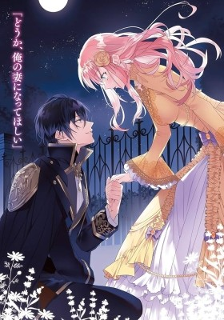

7th Time Loop: The Villainess Enjoys a Carefree Life Married to Her Worst Enemy!

Rishe Irmgard Weitzner, a duke's daughter, has a secret: she died at the age of 20 and returned to the moment five years prior when her engagement was called off. She has already experienced this time loop six times and lived out those five years a different way each time, as a merchant, a doctor, a maid, a knight, and more. Now, on her seventh go-around, she's determined to live to a ripe old age and spend it relaxing. But the moment she flees the castle with that decision in her heart, she runs into the infamously cruel crown prince of a rival kingdom, Arnold Hein. He happens to be the one who killed her during her life as a knight, but now, he seems to have taken a bizarre liking to her and begs her to become his wife. Thus, in order to stay alive and prevent a war, Rishe utilizes her previous experiences to kick off her seventh life as the bride of an enemy nation's crown prince.